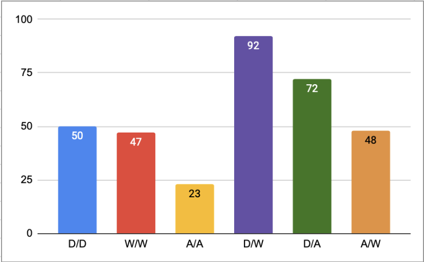

The American Psychological Association reports that
40-50% of All Marriages Fail.
The Enneagram Can Help.
The table to the left demonstrates the conclusive findings from my interactive dashboard––every type's most and least likely pairing according to both datasets.The commonality of a type in the general population broke ties between the frequency of the pairing shown in the dashboard table.
The question is why does this happen? Well, the truth lies within the test––which is half of the point of this study. Because there is no external data that points to why these patterns occur, we are able to conclude that the Enneagram test has truth and value to it, as it itself is a means of storing and organizing data about people.
For example, this bar graph:

Takes an interal Enneagram fact––how each type reacts to a problem (1's, 2's, and 6's are dutiful; 4's, 5's, and 9's are withdrawn, and 3's, 7's, and 8's are assertive)––and uses it to demonstrate a reason why the types pair up the way they do, as you can see that there's an obvious pattern in which reactive types gravitate towards the others.
This is why the Enneagram should be used by dating apps, relationship therapists, dating coaches, etc. to help better not only the chances of people finding a life-long partner, but also the satisfaction of marriages.